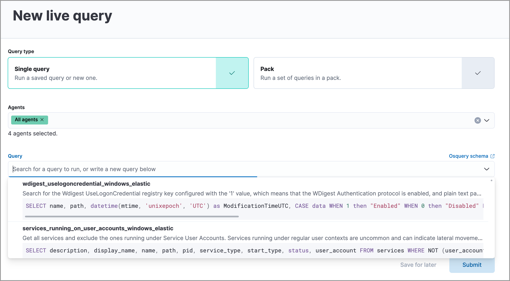
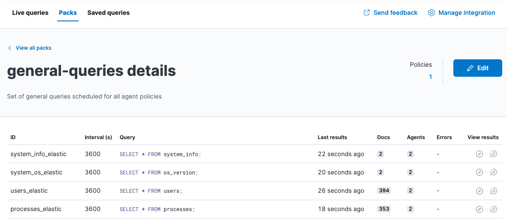

Osquery
editOsquery is an open source tool that lets you query operating systems like a database, providing you with visibility into your infrastructure and operating systems. Using basic SQL commands, you can ask questions about devices, such as servers, Docker containers, and computers running Linux, macOS, or Windows. The extensive schema helps with a variety of use cases, including vulnerability detection, compliance monitoring, incident investigations, and more.
With Osquery in Kibana, you can:
- Run live queries for one or more agents
- Schedule query packs to capture changes to OS state over time
- View a history of past queries and their results
- Save queries and build a library of queries for specific use cases
Osquery in Kibana is powered by the Osquery Manager integration. For information on how to set up Osquery Manager, refer to Manage the integration.
Required privileges
editTo use Osquery Manager, you must be assigned to a role with the following privileges:
-
Readprivileges for thelogs-osquery_manager.result*index. -
Kibana privileges for Osquery Manager. The
Allprivilege enables you to run, schedule, and save queries.Readenables you to view live and scheduled query results, but you cannot run live queries or edit.
Run live queries
editTo inspect hosts, run a query against one or more agents or policies, then view the results.
- Open the main menu, and then click Osquery.
- In the Live queries view, click New live query.
- Choose to run a single query or a query pack.
- Select one or more agents or groups to query. Start typing in the search field, and you’ll get suggestions for agents by name, ID, platform, and policy.
-
Specify the query or pack to run:
-
Query: Select a saved query or enter a new one in the text box. After you enter the query, you can expand the Advanced section to set a timeout period for the query, and view or set mapped ECS fields included in the results from the live query (optional).
Overwriting the query’s default timeout period allows you to support queries that require more time to complete. The default and minimum supported value for the Timeout field is
60. The maximum supported value is900. -
Pack: Select from available query packs. After you select a pack, all of the queries in the pack are displayed.
Refer to prebuilt packs to learn about using and managing Elastic prebuilt packs.

-
-
Click Submit.
To save a single query for future use, click Save for later and define the ID, description, and other details.
-
Review the results and do any of the following:
- Click View in Discover () to explore the results in Discover.
- Click View in Lens () to navigate to Lens, where you can use the drag-and-drop Lens editor to create visualizations.
- Click Add to Case () to add the query results to a new or existing case.
- Click the view details icon () to examine the query ID and statement.
- To view more information about the request, such as failures, open the Status tab.
View or rerun previous live queries
editThe Live queries history section on the Live queries tab shows a log of queries run over the last 30 days. From the Live queries table, you can:
Schedule queries with packs
editA pack is a set of grouped queries that perform similar functions or address common use cases. Prebuilt Elastic packs are available to download and can help you get started using the Osquery integration.
You can also create a custom pack with one or more queries. For example, when creating custom packs, you might create one pack that checks for IT compliance-type issues, and another pack that monitors for evidence of malware.
You can run packs as live queries or schedule packs to run for one or more agent policies. When scheduled, queries in the pack are run at the set intervals for all agents in those policies.
- Click the Packs tab.
- Click Add pack to create a new pack, or click the name of an existing pack, then Edit to add queries to an existing pack.
- Provide a name for the pack. The short description is optional.
-
Schedule the pack to be deployed on specified agent policies (Policy) or on all agent policies (Global).
Pack deployment details are stored within the Osquery configuration. The
shardfield value is the percentage of agents in the policy using the pack.If you choose the Policy option, configure these fields:
When defining pack deployment details, you cannot configure the same policy multiple times. In other words, after specifying a policy, you can either choose to deploy the pack to all of the policy’s agents or only a subset. You cannot choose both.
- Scheduled Elastic Agent policies (optional): Allows you to deploy the pack to specific agent policies. By default, the pack is deployed to all Elastic Agents that are registered to the policies you define.
- Partial deployment (shards): Allows you to deploy the pack to a portion of the agents on each specified agent policy. After defining a policy, use the Shard slider to set the amount of agents to which the pack is deployed. For example, after specifying a policy, you can choose to deploy the pack to half of the policy’s agents by selecting 50% on the slider.
-
If you’re creating a new pack, add queries to schedule:
-
Click Add query and then add a saved query or enter a new query. Each query must include a unique query ID and the interval at which it should run. Optionally, set the minimum Osquery version and platform, specify a timeout period, or map ECS fields. When you add a saved query to a pack, this adds a copy of the query. A connection is not maintained between saved queries and packs.
Overwriting the query’s default timeout period allows you to support queries that require more time to complete. The default and minimum supported value for the Timeout field is
60. The maximum supported value is900. -
Upload queries from a
.confquery pack by dragging the pack to the drop zone under the query table. To explore the community packs that Osquery publishes, click Example packs.
-
- Click Save pack. The queries run when the policy receives the update.
View status of scheduled packs
edit- Open the Packs tab.
-
Click a pack name to view the status.
Details include the last time each query ran, how many results were returned, and the number of agents the query ran against. If there are errors, expand the row to view the details, including an option to view more information in the Logs.
 - View scheduled query results in Discover or the drag-and-drop Lens editor.
Save queries
editYou can save queries in two ways:
- After running a live query, click the Save for later link.
- From the Saved queries tab, click Add saved query.
Once you save a query, you can only edit it from the Saved queries tab:
- Go to Saved queries, and then click Add saved query or the edit icon.
-
Provide the following fields:
- The unique identifier (required).
- A brief description.
- The SQL query (required). Osquery supports multi-line queries.
-
A timeout period (optional). Increase the query’s default timeout period to support queries that require more time to complete. The default and minimum supported value for the Timeout field is
60. The maximum supported value is900. - The ECS fields to populate when the query is run (optional). These fields are also copied in when you add this query to a pack.
-
The defaults to set when you add the query to a pack.
- The frequency to run the query.
- The minimum version of Osquery required to run the query.
- The operating system required to run the query. For information about supported platforms per table, refer to the Osquery schema.
-
Click Test configuration to test the query and any mapped fields:
- From the Test query panel, select agents or groups to test the query, then click Submit to run a live query. Result columns with the icon are mapped. Hover over the icon to see the mapped ECS field.
- Click Save or Update.
Prebuilt Elastic packs and queries
editThe prebuilt Osquery packs are included with the integration. Once you add a pack, you can activate and schedule it.
Prebuilt packs
editThe prebuilt Osquery packs are included with the integration and can be optionally loaded. Once added, you can then activate and schedule the packs.
You can modify the scheduled agent policies for a prebuilt pack, but you cannot edit queries in the pack. To edit the queries, you must first create a copy of the pack.
For information about the prebuilt packs that are available, refer to Prebuilt packs reference.
Load and activate prebuilt Elastic packs
editFollow these steps to load and turn on new or updated prebuilt packs:
- Go to Packs, and then click Load Elastic prebuilt packs.
-
For each pack that you want to activate and schedule:
-
Turn on the Active toggle to ensure the pack runs continuously.
You must manually run inactive packs.
- Click the pack name, then Edit.
- Update the Scheduled agent policies to specify the policies where this pack should run.
-
- Click Update pack.
Copy prebuilt Elastic packs
editTo modify queries in prebuilt packs, you must first make a copy of the pack.
- Go to Stack Management → Saved Objects.
- Search for the Osquery packs you want to modify by name.
- Select the checkboxes of the packs to export.
- Click Export x objects.
- Click Import.
- Select the import option Create new objects with random IDs, then click Import to import the pack. This creates a copy of the pack that you can edit.
Prebuilt queries
editA set of saved queries are included with the integration and available to run as a live query. Note the following about the prebuilt queries:
- The queries are not editable.
- Several of the queries include default ECS mappings to standardize the results.
-
The prebuilt Elastic queries all follow the same naming convention and identify
what type of information is being queried, what operating system it supports if it’s limited to one or more,
and that these are Elastic queries. For example,
firewall_rules_windows_elastic.
Map result fields to ECS
editWhen you save queries or add queries to a pack, you can optionally map Osquery results or static values to fields in
the Elastic Common Schema (ECS).
This standardizes your Osquery data for use across detections, machine learning,
and any other areas that rely on ECS-compliant data.
When the query is run, the results include the original osquery.<fields>
and the mapped ECS fields. For example, if you update a query to map osquery.name to user.name, the query results include both fields.
-
Edit saved queries or queries in a pack to map fields:
- For Saved queries: Open the Saved queries tab, and then click the edit icon for the query that you want to map.
- For packs: Open the Packs tab, edit a pack, and then click the edit icon for the query that you want to map.
- In the ECS mapping section, select an ECS field to map.
-
In the Value column, use the dropdown on the left to choose what type of value to map to the ECS field:
- Osquery value: Select an Osquery field. The fields available are based on the SQL query entered, and only include fields that the query returns. When the query runs, the ECS field is set dynamically to the value of the Osquery field selected.
-
Static value: Enter a static value. When the query runs, the ECS field is set to the value entered. For example, static fields can be used to apply
tagsor your preferredevent.categoryto the query results.
- Map more fields, as needed. To remove any mapped rows, click the delete icon.
- Save your changes.
- Some ECS fields are restricted and cannot be mapped. These are not available in the ECS dropdown.
- Some ECS fields are restricted to a set of allowed values, like event.category. Use the ECS Field Reference for help when mapping fields.
- Osquery date fields have a variety of data types (including integer, text, or bigint). When mapping an Osquery date field to an ECS date field, you might need to use SQL operators in the query to get an Elasticsearch-compatible date type.
Extended tables for Kubernetes queries
editIn addition to the Osquery schema, the Elastic-provided version of Osquery also includes the following tables to support Kubernetes containers. These can be queried with live or scheduled queries.
-
host_users -
host_groups -
host_processes
When querying these tables, the expectation is that the /etc/passwd, /etc/group, and /proc are available in the container under /hostfs as:
/hostfs/etc/passwd, /hostfs/etc/group, and /hostfs/proc. For information about the fields available in these tables, see the
exported fields reference.
Osquery status
editA query can have the following status:
Successful |
The query successfully completed. |
Failed |
The query encountered a problem, such as an issue with the query or the agent was disconnected, and might have failed. |
Not yet responded |
The query has not been sent to the agent. |
Expired |
The action request timed out. The agent may be offline. |
If an agent is offline, the request status remains pending as Kibana retries the request. By default, a query request times out after one minute. An action timeout error is returned when the query does not complete within that interval.
Osquery results
editWhen you run live or scheduled queries, the results are automatically stored in an Elasticsearch index, so that you can search, analyze, and visualize this data in Kibana. For a list of the Osquery fields that can be returned in query results, refer to exported fields. Query results can also include ECS fields, if the query has a defined ECS mapping.
Osquery responses include the following information:
-
Everything prefaced with
osquery.is part of the query response. These fields are not mapped to ECS by default. -
Results include some ECS fields by default, such as
host.*andagent.*, which provide information about the host that was queried. -
For live queries, the
action_data.queryis the query that was sent. -
For scheduled queries in a pack, the
action_idhas the formatpack_<pack-name>_<query-ID>. You can use this information to look up the query that was run. - By default, all query results are snapshot logs that represent a point in time with a set of results, with no differentials.
-
Osquery data is stored in the
logs-osquery_manager.result-<namespace>datastream, and the result row data is under theosqueryproperty in the document.